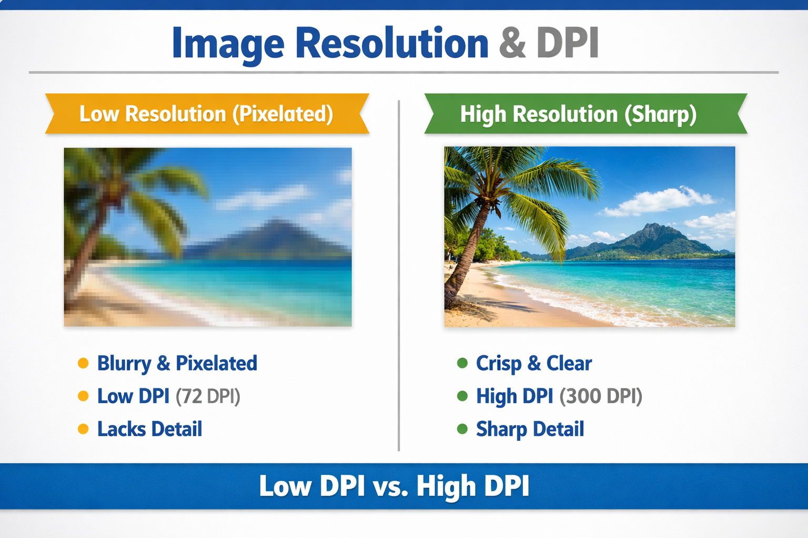

معرض المفاهيم التعليمية
تطبيق مفاهيم Raster vs Vector وأنظمة الألوان

الرسوم النقطية (Raster)
تعتمد على شبكة من البكسلات وتفقد جودتها عند التكبير.

الرسوم المتجهة (Vector)
تعتمد على مسارات رياضية وتحافظ على جودتها في أي حجم.

نظام الألوان RGB
نظام الألوان المضاف المخصص لشاشات العرض الرقمية.

نظام الألوان CMYK
نظام الألوان المطروح المخصص لعمليات الطباعة الاحترافية.

الدقة والـ DPI
توضيح العلاقة بين عدد النقاط في البوصة وجودة الصورة.